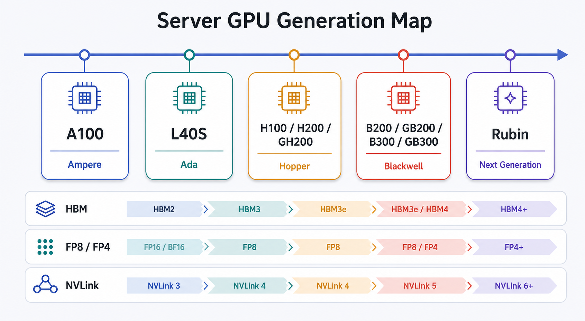
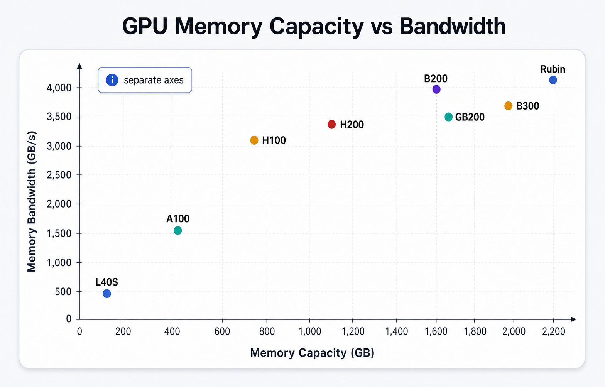
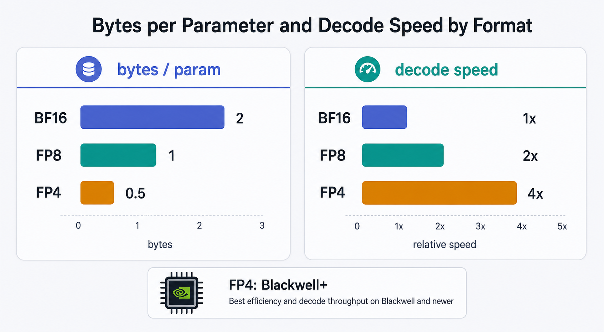
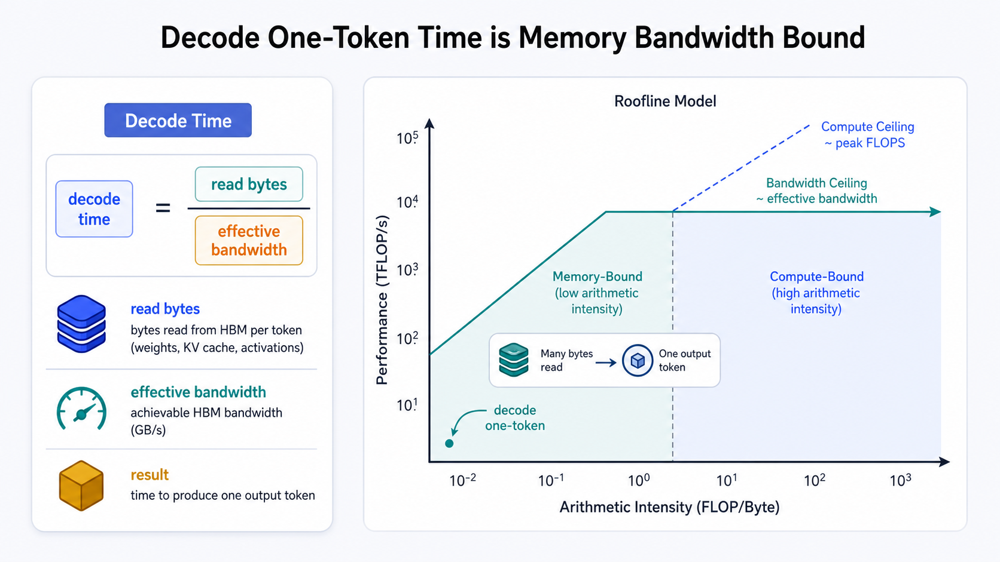
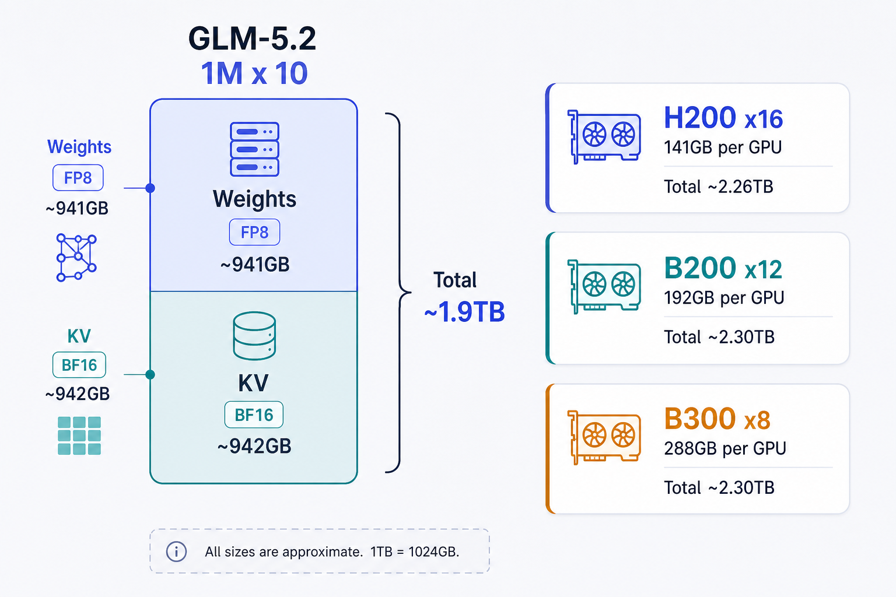
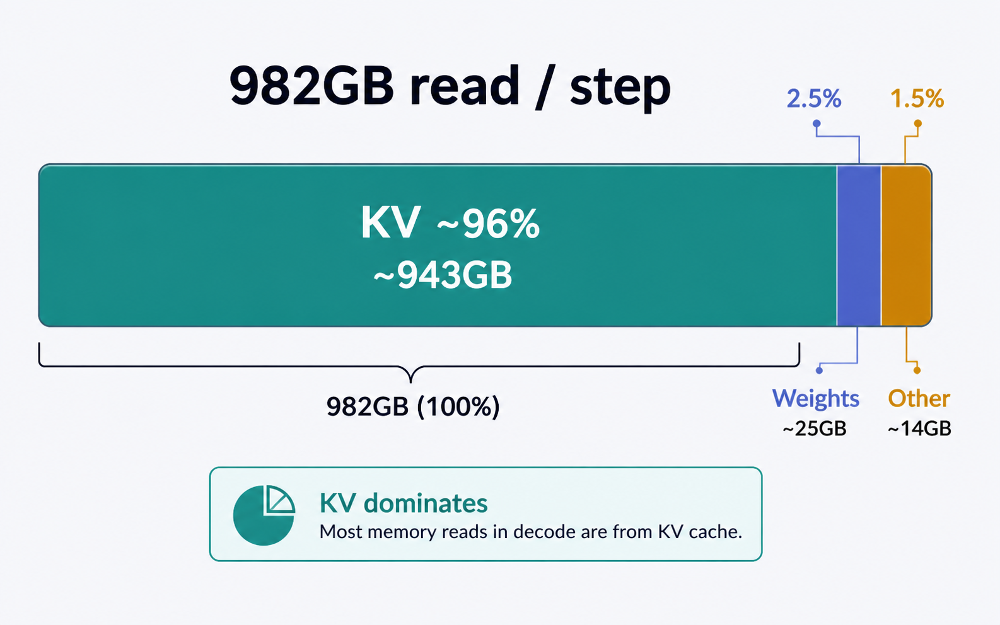
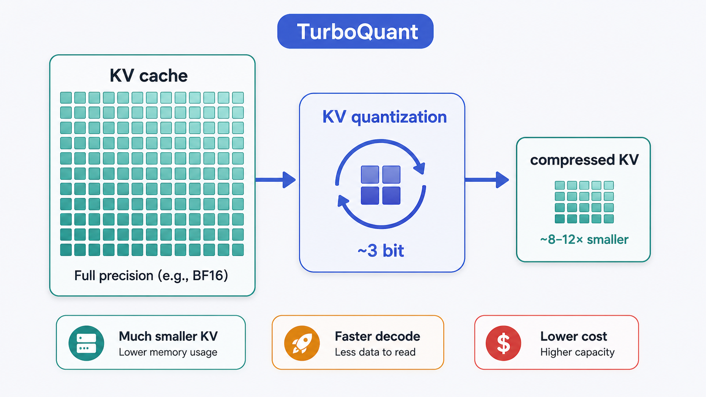
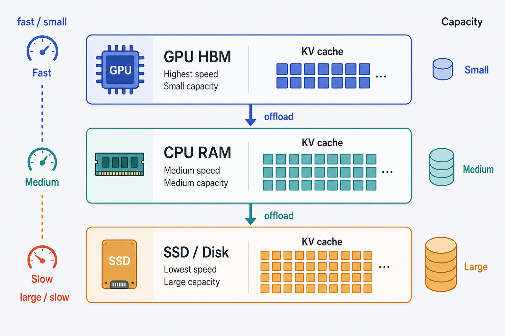

サーバーGPUの世代マップHBM・低精度演算・接続ドメインの進化
世代交代で効くのは演算性能だけでなく、モデルとKVキャッシュを保持するメモリ容量、decodeを決めるメモリ帯域、そして複数GPUをどこまで一体として扱えるか。
流れは、AmpereのA100を起点に、Ada世代の汎用PCIe GPUであるL40S、Hopper世代のH100/H200とGrace Hopperを統合したGH200、Blackwell世代のB200/GB200、Blackwell UltraのB300/GB300、さらに次世代のRubinへ続く。ただしL40SはA100の直接的な後継ではなく、グラフィックス・映像処理・AI推論を広く扱うPCIe型の分岐と見るべきである。
A100はHBMとNVLinkを備えた大規模基盤を普及させた世代だが、FP8とFP4には対応しない。L40SはFP8に対応する一方、メモリはGDDR6でNVLinkを持たない。HopperではH100がFP8を導入し、H200は同じHopper系のままHBM容量と帯域を拡張した。GH200はGrace CPUとHopper GPUをNVLink-C2Cで接続し、CPUメモリとGPUメモリをcoherentに扱える点が特徴である。
BlackwellではB200がFP4に対応し、GB200ではGrace CPUと2基のB200をSuperchipとして統合する。GB200 NVL72は72GPUを単一のNVLinkドメインに収め、ラック全体を「巨大な1基のアクセラレータ」に近い単位として扱う。Blackwell UltraのB300/GB300は公式情報に基づくが、容量やラック最大値は構成依存で要検証。Rubinは288GB HBM4・22,000GB/s・NVLink 3,600GB/sという値が示されているが、いずれも公式（暫定）であり、確定値として調達・性能計画に使わない。B100は公式datasheetが確認できないため本ページの比較値に採用しない。

主要GPU一覧容量・帯域・FP8/FP4・NVLink
参考: Qiita「なぜLLMは遅いのか？ KV CacheとSpeculative Decodingの数学的理解」
小バッチdecodeでは、演算FLOPSより先に「メモリ容量」と「メモリ帯域」を確認する。容量が「載るか」を、帯域が「1トークンを何秒で出すか」を決める。
| GPU | メモリ | 種別 | 帯域(GB/s) | FP8 | FP4 | NVLink/GPU | 世代・備考 |
|---|---|---|---|---|---|---|---|
| A100 40GB | 40GB | HBM2 | 1,555 | ✗ | ✗ | 600 | Ampere |
| A100 80GB SXM | 80GB | HBM2e | 2,039 | ✗ | ✗ | 600 | Ampere |
| A100 80GB PCIe | 80GB | HBM2e | 1,935 | ✗ | ✗ | 600 | Ampere |
| L40S | 48GB | GDDR6 | 864 | ✓ | ✗ | 無 | Ada（PCIe汎用） |
| H100 SXM5 | 80GB | HBM3 | 3,350 | ✓ | ✗ | 900 | Hopper主力 |
| H100 PCIe | 80GB | HBM2e | 2,000 | ✓ | ✗ | 600 | PCIe版はHBM2e |
| H100 NVL | 94GB | HBM3 | 3,900 | ✓ | ✗ | 600 | LLM推論向け |
| H200 SXM/NVL | 141GB | HBM3e | 4,800 | ✓ | ✗ | 900 | Hopper（容量拡張） |
| GH200 96GB | 96GB | HBM3 | 4,000 | ✓ | ✗ | C2C 900 | Grace+Hopper coherent |
| GH200 144GB | 144GB | HBM3e | 4,900 | ✓ | ✗ | C2C 900 | coherent |
| B200 | 180GB | HBM3e | 8,000 | ✓ | ✓ | 1,800 | Blackwell（容量は構成依存） |
| GB200 Superchip | 372GB* | HBM3e | 16,000* | ✓ | ✓ | C2C+NVL5 | *Grace+2×B200の合計値 |
| GB200 NVL72 | 13.4TB† | HBM3e | 1,800/GPU | ✓ | ✓ | rack 130TB/s | †72GPU合計・単一NVLinkドメイン |
| B300 (Blackwell Ultra) | 288GB | HBM3e | 8,000 | ✓ | ✓ | 1,800 | 容量+50%・要検証 |
| GB300 NVL72 | 37TB† | HBM3e+LPDDR5X | rack 576TB/s | ✓ | ✓ | NVL5 | †fast memory合計 |
| Rubin GPU 暫定 | 288GB | HBM4 | 22,000 | ✓ | ✓ | 3,600 | 公式(暫定)・要検証 |
| B100 | — | — | — | — | — | — | 公式datasheet無し→非掲載 |
| AMD MI300X | 192GB | HBM3 | 5,325 | ✓ | ✗ | — | CDNA3（参考） |
| AMD MI325X | 256GB | HBM3e | 6,000 | ✓ | ✗ | — | CDNA3（参考） |
| AMD MI350X/MI355X | 288GB | HBM3e | 8,000 | ✓ | ✓* | — | CDNA4・*MXFP4（参考） |
「帯域」は原則GPUメモリ帯域。Superchip合計値（GB200の16,000）・ラック合計値・NVLinkファブリック帯域（GB200 NVL72の1,800/GPU・130TB/s）は対象が異なるので、同じ尺度で並べない。per-GPUメモリ帯域の降順は次の通り：
Rubin 22,000 暫定 ＞ B200/B300/MI350X/MI355X 8,000 ＞ MI325X 6,000 ＞ MI300X 5,325 ＞ GH200-144 4,900 ＞ H200 4,800 ＞ GH200-96 4,000 ＞ H100 NVL 3,900 ＞ H100 SXM5 3,350 ＞ A100 80 SXM 2,039 ＞ H100 PCIe 2,000 ＞ A100 80 PCIe 1,935 ＞ A100 40 1,555 ＞ L40S 864

coherentメモリ「何枚で保持するか」から「どのドメインに置くか」へ
GH200のCPU-GPU coherenceとGB200/GB300 NVL72の単一NVLinkドメインは、巨大モデルの設計単位を「個々のGPU」から「Superchip／ラック全体」へ拡張する。
GH200では、Grace CPUとHopper GPUが900GB/sのNVLink-C2Cで接続され、CPUメモリとGPUメモリをcoherentに扱える。1 Superchip当たり最大624GBのfast-accessメモリ空間を利用でき、GPU HBMに収まらない重みやKVをCPU側へ階層化しつつ明示的なPCIeコピーを減らせる。ただしcoherentでも、すべてのメモリがHBMと同じ速度になるわけではない。頻繁に読む重みや現在のattention windowをどこへ置くかは引き続き重要である。
GB200 NVL72では72GPUが単一のNVLinkドメインを形成し、ラック内に合計13.4TBのHBMと130TB/sのファブリックを持つ。数TB級のモデルとKVを複数の独立サーバーへ分断せず、1ラック内の高帯域ドメインへ配置できる（最大576GPUドメインまで拡張可）。GB300 NVL72も同じ72GPUドメインで、HBM3e 20TB＋LPDDR5X 17TB＝37TBのfast memoryを持つ（要検証）。
FP8・FP4・BF16で速度はどう変わるかdecodeはバイト、prefillは演算器を見る
BF16/FP8/FP4の効果は、decodeでは主に「読み出しバイト数の削減」、prefillでは「読み出し削減＋Tensor Core演算性能」の両方として現れる。
| 精度 | byte/param | BF16比の読み出し量 | decode(batch1)の効き |
|---|---|---|---|
| BF16 | 2.0 | 1.00 | 基準 |
| FP8 | 1.0 | 0.50 | 理想で最大2倍速 |
| FP4 | 0.5 | 0.25 | 理想でFP8の2倍／BF16の4倍速 |
小バッチ、特にbatch 1のdecodeは重み帯域律速であり、量子化前後でKernel効率が同一なら、BF16→FP8→FP4で各々最大2倍、BF16→FP4で最大4倍の理想的な速度差がある。ただしこれは重み読み出しだけが全時間を占めるRoofline。実際にはscale等の量子化メタデータ、dequantize、フォーマット変換、非対応演算のfallback、通信、スケジューリングが加わるため、byte/paramの比率をそのまま実測倍率にしてはいけない。

BF16=2 / FP8=1 / FP4=0.5 byte/param と decode相対速度。FP4はBlackwell以降のみ。

| 世代/GPU | BF16 | FP8 | FP4 |
|---|---|---|---|
| A100 (Ampere) | ✓ | ✗ | ✗ |
| L40S (Ada) | ✓ | ✓ | ✗ |
| H100 / H200 / GH200 (Hopper) | ✓ | ✓ | ✗ |
| B200 / GB200 / B300 / GB300 (Blackwell) | ✓ | ✓ | ✓ NVFP4 |
| AMD MI350X / MI355X (CDNA4) | ✓ | ✓ | ✓ MXFP4 |
FP4には二つの効果がある。第一は、重みと対応する活性値のバイト数を減らし、decode時のメモリ帯域負荷を下げる効果。batch 1に近いdecodeでは演算器よりメモリ帯域が先に飽和しやすいため、主効果はこちら。第二は、denseなFP4 Tensor Core演算で演算律速部分を高速化する効果。多数の入力トークンをまとめて処理するprefillでは並列度が高く、FP4 FLOPSの増加を利用しやすい。
ケース：GLM-5.2 を1Mコンテキスト×10シーケンスで動かす容量とdecode Rooflineの概算
この条件では作業領域込みで約2.1TB級が必要で、decode読み出し量の約96%をKVが占める。だから重みのFP4化よりKVのFP8化が速度に効く。

前提（既存ブリーフ）：GLM-5.2 は MoE 総753B、1トークン当たりActive約40B（推定）。MLAコアKVはBF16で約89,856 bytes/token（≈87.75 KiB/token）。重み容量の概算は BF16≈1,506GB / FP8≈941GB / 4bit≈470GB。容量は総753B、1ステップの読み出しはActive約40B——この2つを混同しない。
| GPU | 容量/GPU | 必要枚数(≈2.1TB) | 公称合計 |
|---|---|---|---|
| A100 80GB | 80GB | 27 | 2,160GB |
| H100 80GB | 80GB | 27 | 2,160GB |
| H200 141GB | 141GB | 16* | 2,256GB |
| B200 180GB | 180GB | 12 | 2,160GB |
| B300 288GB | 288GB | 8 | 2,304GB |
| GB200 NVL72 | 13.4TB/rack | 1ラック内 | 単一ドメインに収容 |
*H200は15枚だと余裕15GBで作業領域を吸収できず、安全側で16枚を採用。

decode速度（1ステップ＝10シーケンスへ各1トークン）
| 構成 | 枚数 | per-GPU帯域 | 実効総帯域(η0.6) | step時間 | tok/s/seq | 集計tok/s |
|---|---|---|---|---|---|---|
| H100 SXM5 | 27 | 3,350 | 54,270 | 18.1ms | 55.3 | 552.6 |
| H200 | 16 | 4,800 | 46,080 | 21.3ms | 46.9 | 469.2 |
| B200 | 12 | 8,000 | 57,600 | 17.0ms | 58.7 | 586.6 |
| B300 | 8 | 8,000 | 38,400 | 25.6ms | 39.1 | 391.0 |
| GB200 NVL72 | 72 | 1,800† | 77,760 | 12.6ms | 79.2 | 791.9 |
単位 GB/s。理論上限・概算 η=0.6。η=0.5〜0.7で tok/s/seq は概ね ±15%（例: H200×16 で 39.1〜54.7、GB200 NVL72 で 66.0〜92.4）。†GB200 NVL72の1,800はNVLinkファブリック側の指標で、B200のHBM 8,000とは尺度が異なる（実機はHBM/NVLink/通信の最も狭い経路が律速＝要検証）。
KV支配の実証（同じ B200×12 で比較）
| 設定 | step読み出し | tok/s/seq | 基準比 |
|---|---|---|---|
| 基準（FP8重み＋BF16 KV） | 982GB | 58.7 | 1.00× |
| KVをFP8化（FP8重み＋FP8 KV） | 511GB | 112.7 | 約1.92× |
| 重みをFP4化（FP4重み＋BF16 KV） | 962GB | 59.9 | 約1.02× |
同じB200×12でも、KVをBF16→FP8にすると約1.92倍（≒2倍）速くなるのに対し、重みをFP8→FP4にしても総読み出しは982→962GBで改善は約2%にとどまる。FP4はprefill（演算律速）には有効だが、1Mコンテキスト×10シーケンスのdecodeでは、重み精度よりKV精度が支配的——という結論になる。

KVが大きすぎる問題への対策（運用効率の最前線）


- ランダム直交回転、Lloyd-Max量子化、1bit QJL補正を使います。
- 再学習なしでオンライン適用し、3bit級でも精度維持を狙います。
- 公式blogは3bitで損失ほぼなし、論文abstractは3.5bitで品質中立です。
- 表現差の条件確認が必要で、目的は知能向上でなく推論・運用の効率化です。
参考: arXiv:2504.19874 / Google Research blog / Qiita
- 大容量メモリを備えたサーバーで動かす選択肢です。
- 転送帯域が律速となるため、tok/sは下がります。
- Llama2 7B・2048では、prefetch併用でも約3〜5倍低速です。
- 1M×10・約942GBも候補ですが、速度はモデル、文脈、PCIe、RAM、SSD次第です。
参考: qualiteg blog
まとめと注意仕様値は入口、最終判断は実測
サーバーGPU選定では、①モデルを保持できる容量、②decodeを支える実効メモリ帯域、③複数GPUを束ねる接続、④利用可能な低精度Kernel、の四点を分けて評価する。A100→H100/H200ではFP8対応とHBM帯域向上が大きく、B200/B300以降ではFP4が加わって重み容量とdecode帯域負荷をさらに減らせる。ただし長大コンテキストではKVが支配的になり、重みのFP4化だけでは大きなdecode改善を得られない。
本ケース（GLM-5.2 ×1M×10）では、FP8重み＋BF16 KVだけで約1,883GB、作業領域込みで約2.1TB級が必要で、decode読み出し982GB/stepの約96%がKV。この条件ではFP8 KVが重みFP4より強い最適化レバーになる。また、容量を満たす最小枚数が最速構成とは限らない（B300×8 vs B200×12）。コスト・消費電力・ラック密度・通信量・可用性を含めたシステム全体で比較する。